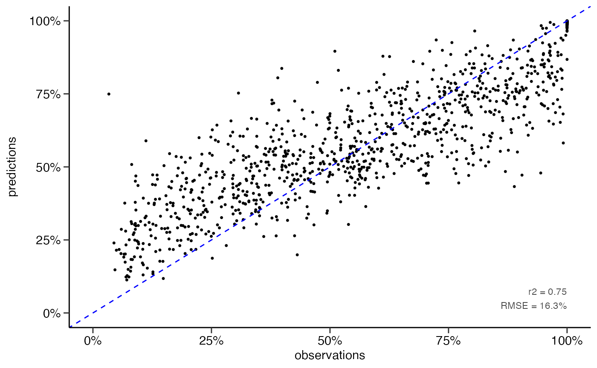

Random Forest
Mathias Riechel, Michael Rustler
Source:vignettes/prediction_random-forest.Rmd
prediction_random-forest.RmdInstall R Package
# Enable KWB-R universe
options(repos = c(
kwbr = 'https://kwb-r.r-universe.dev',
CRAN = 'https://cloud.r-project.org'))
# Install R package "dwc.wells"
install.packages('dwc.wells', dependencies = TRUE)Input Dataset
library(dwc.wells)
df <- dwc.wells::model_data_reduced
str(df)
#> 'data.frame': 6308 obs. of 27 variables:
#> $ Qs_rel : num 100 97.8 75.1 78.5 52.2 ...
#> $ well_id : int 548676 548676 548676 548676 548676 548676 548676 548676 548676 548676 ...
#> $ well_age_years : num 0 23.2 29.3 29.5 35 ...
#> $ construction_year : num 1970 1970 1970 1970 1970 1970 1970 1970 1970 1970 ...
#> $ screen_material : Factor w/ 6 levels "3fe9575b","5bad81ff",..: 2 2 2 2 2 2 2 2 2 2 ...
#> $ diameter : num 300 300 300 300 300 300 300 300 300 300 ...
#> $ drilling_method : Factor w/ 6 levels "213a7eba","53686f99",..: 3 3 3 3 3 3 3 3 3 3 ...
#> $ admissible_discharge : num 176 176 176 176 176 176 176 176 176 176 ...
#> $ operational_start.Qs : num 39.1 39.1 39.1 39.1 39.1 ...
#> $ aquifer_coverage : Factor w/ 5 levels "79316b83","90351ceb",..: 1 1 1 1 1 1 1 1 1 1 ...
#> $ W_static.sd : num 0.766 0.766 0.766 0.766 0.766 ...
#> $ surface_water.distance: Factor w/ 8 levels "2af55c68","2cfd2a47",..: 2 2 2 2 2 2 2 2 2 2 ...
#> $ n_rehab : int 0 1 1 2 2 3 3 4 4 4 ...
#> $ time_since_rehab_years: num 0 0.0411 6.193 0.0794 5.5524 ...
#> $ volume_m3_d.mean : num 1203 1203 1203 1203 1203 ...
#> $ volume_m3_d.cv : num 1.29 1.29 1.29 1.29 1.29 ...
#> $ quality.EC : num 824 824 824 824 824 ...
#> $ quality.DO : num 0.235 0.235 0.235 0.235 0.235 0.235 0.235 0.235 0.235 0.235 ...
#> $ quality.Temp : num 11.7 11.7 11.7 11.7 11.7 11.7 11.7 11.7 11.7 11.7 ...
#> $ quality.pH : num 7.4 7.4 7.4 7.4 7.4 7.4 7.4 7.4 7.4 7.4 ...
#> $ quality.Redox : num 86 86 86 86 86 86 86 86 86 86 ...
#> $ quality.Fe_tot : num 1.9 1.9 1.9 1.9 1.9 1.9 1.9 1.9 1.9 1.9 ...
#> $ quality.Mn : num 0.24 0.24 0.24 0.24 0.24 0.24 0.24 0.24 0.24 0.24 ...
#> $ quality.NO3 : num 0.1 0.1 0.1 0.1 0.1 0.1 0.1 0.1 0.1 0.1 ...
#> $ quality.PO4 : num 0.966 0.966 0.966 0.966 0.966 ...
#> $ quality.SO4 : num 94 94 94 94 94 94 94 94 94 94 ...
#> $ quality.TSS : num 4.1 4.1 4.1 4.1 4.1 4.1 4.1 4.1 4.1 4.1 ...Resampling
set.seed(1)
resampled_dataset <- dwc.wells::resample_dataset(
model_data = df,
method = "random",
prop = 0.8
)
df_training <- resampled_dataset$training
df_test <- resampled_dataset$testingRegression
Hyperparameter Tuning
# Specify model ----------------------------------------------------------------
# specify model
rf_reg_tune_model <- parsnip::rand_forest(trees = 500,
mtry = tune::tune(),
min_n = tune::tune()) %>%
# Specify the engine
parsnip::set_engine('randomForest') %>%
# Specify the mode
parsnip::set_mode('regression')
# specify recipe
rec <- recipes::recipe(Qs_rel ~ ., data = df_training)
# setup workflow
rf_reg_tune_wflow <- workflows::workflow() %>%
workflows::add_recipe(rec) %>%
workflows::add_model(rf_reg_tune_model)
# define cross validation procedure
cv_folds <- rsample::vfold_cv(df_training, v = 5)
# define hyperparameter grid
#rf_reg_grid <- grid_random(parameters(rf_reg_tune_model), size = 100)
#rf_reg_grid <- grid_regular(parameters(rf_reg_tune_model), c(5,5))
rf_reg_grid <- dials::grid_regular(dials::mtry(range = c(3, 15)),
dials::min_n(range = c(5, 15)),
levels = 13)
# parallelisation and tuning
doParallel::registerDoParallel()
set.seed(345)
rf_reg_tuning <- tune::tune_grid(
rf_reg_tune_wflow,
resamples = cv_folds,
grid = rf_reg_grid
)
# visualise results
metrics <- rf_reg_tuning %>% tune::collect_metrics()
dwc.wells::save_data(metrics,
path = getwd(),
filename = sprintf("rf-regression_tuning-grid_resampling-%s_metric",
resampling))
# visualise results
metrics %>%
dplyr::filter(.metric == "rmse") %>%
dplyr::select(mean, min_n, mtry) %>%
tidyr::pivot_longer(min_n:mtry,
values_to = "value",
names_to = "parameter") %>%
ggplot2::ggplot(ggplot2::aes(value, mean, color = parameter)) +
ggplot2::geom_point(show.legend = FALSE) +
ggplot2::scale_x_continuous(breaks = seq.int(1, 15, 2)) +
ggplot2::facet_wrap(~parameter, scales = "free_x") +
ggplot2::labs(x = NULL, y = "RMSE [%]") +
sema.berlin.utils::my_theme()
ggplot2::ggsave("rf_reg_regression_hyperparameter_tuning_plot_regular_random_resampling.png",
width = 6,
height = 3,
dpi = 600)
# raster heatmap plot
metrics %>%
dplyr::filter(.metric == "rmse") %>%
dplyr::select(mean, min_n, mtry) %>%
ggplot2::ggplot(aes(x = min_n, y = mtry, fill = mean)) +
ggplot2::geom_raster() +
ggplot2::scale_x_continuous(breaks = seq.int(1, 15, 2)) +
ggplot2::scale_y_continuous(breaks = seq.int(1, 15, 2)) +
ggplot2::labs(fill = "RMSE [%]") +
sema.berlin.utils::my_theme()
ggplot2::ggsave("rf_reg_regression_hyperparameter_tuning_plot_regular_random_resampling_heatmap.png",
width = 5,
height = 3,
dpi = 600)
# determine best model
best_rmse <- tune::select_best(rf_reg_tuning, "rmse")
dwc.wells::save_data(best_rmse,
path = getwd(),
filename = "rf_reg_regression_best_model_regular",
"RData")
final_rf_reg <- tune::finalize_model(rf_reg_tune_model, best_rmse)
# update workflow
rf_reg_final_wflow <- workflows::workflow() %>%
workflows::add_recipe(rec) %>%
workflows::add_model(final_rf_reg)
# train and test model / workflow
rf_reg_final_fit <- rf_reg_final_wflow %>% tune::last_fit(data_split)
#get metrics
rf_reg_final_fit %>% tune::collect_metrics()
# get predictions
df_pred <- rf_reg_final_fit %>% tune::collect_predictions()
# Evaluate model performance ---
ggplot2::scatterplot(df_pred)
ggplot2::ggsave("random_forest_regression_tuned_regular.png", width = 3.5, height = 3)Best-Fit Model
rf_reg_model <- parsnip::rand_forest(trees = 500,
mtry = 6,
min_n = 10) %>%
# Specify the engine
parsnip::set_engine('randomForest') %>%
# Specify the mode
parsnip::set_mode('regression')
# Model training and assessment (regression) -----------------------------------
# Train model
set.seed(26)
rf_reg_fit <- rf_reg_model %>% parsnip::fit(Qs_rel ~ ., data = df_training)
# Make predictions
predictions <- predict(rf_reg_fit, df_test)
# Evaluate model performance
df_pred <- df_test %>%
dplyr::select(Qs_rel) %>%
dplyr::bind_cols(predictions)
yardstick::rmse(df_pred, truth = Qs_rel, estimate = .pred)
#> # A tibble: 1 × 3
#> .metric .estimator .estimate
#> <chr> <chr> <dbl>
#> 1 rmse standard 16.3
yardstick::rsq(df_pred, truth = Qs_rel, estimate = .pred)
#> # A tibble: 1 × 3
#> .metric .estimator .estimate
#> <chr> <chr> <dbl>
#> 1 rsq standard 0.747
# scatter plot
dwc.wells::scatterplot(df_pred,
lines_80perc = FALSE,
alpha = 1,
pointsize = 0.9)
#> Warning: Removed 142 rows containing missing values (geom_point).
ggplot2::ggsave("scatterplot_rf-regression_numeric.png",
dpi = 600,
width = 3.5,
height = 3)
#> Warning: Removed 142 rows containing missing values (geom_point).Classification
# classification performance ---------------------------------------------------
# classify Qs data
df_pred <- df_pred %>%
dplyr::mutate(Qs_rel_class = dwc.wells::classify_Qs(Qs_rel),
.pred_class = dwc.wells::classify_Qs(.pred))
# confusion matrix
matrix <- yardstick::conf_mat(df_pred,
truth = Qs_rel_class,
estimate = .pred_class)
matrix
#> Truth
#> Prediction low high
#> low 743 139
#> high 27 355
# performance metrics
metrics <- summary(matrix)
metrics
#> # A tibble: 13 × 3
#> .metric .estimator .estimate
#> <chr> <chr> <dbl>
#> 1 accuracy binary 0.869
#> 2 kap binary 0.713
#> 3 sens binary 0.965
#> 4 spec binary 0.719
#> 5 ppv binary 0.842
#> 6 npv binary 0.929
#> 7 mcc binary 0.726
#> 8 j_index binary 0.684
#> 9 bal_accuracy binary 0.842
#> 10 detection_prevalence binary 0.698
#> 11 precision binary 0.842
#> 12 recall binary 0.965
#> 13 f_meas binary 0.900
dwc.wells::save_data(matrix,
path = getwd(),
filename = "rf_numeric_to_class_matrix_split80",
formats = "RData")